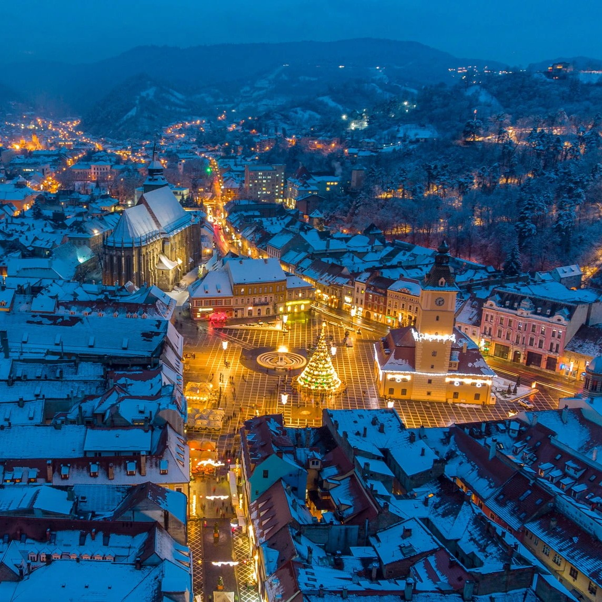
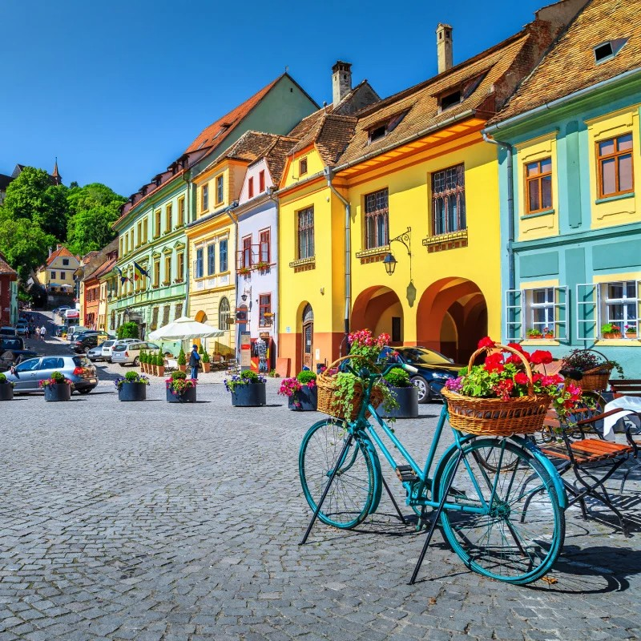

Romania
Exploring the Enigmatic Heart of Eastern Europe
Romania, often referred to as the "Land of Dracula," is a country that has long captivated the imaginations of travelers. Yet, beyond the famous vampire tales, Romania is a treasure trove of natural beauty, cultural richness, and historical significance. My journey was a quest to delve deep into its enigmatic heart, discover its hidden gems, and immerse myself in its captivating traditions.
 My Romanian adventure began in Bucharest, the capital city where the past and present coexist in a dynamic fusion. I wandered through the historic streets of the Old Town, where Belle Époque buildings stood alongside sleek modern structures. The Palace of the Parliament, a colossal communist-era masterpiece, left me in awe of its sheer grandeur. One of the highlights was a visit to the Village Museum, an open-air exhibition of traditional Romanian houses from various regions. It was a fascinating glimpse into the country's rural heritage. Bucharest was a city of contrasts, where history, art, and vibrant nightlife seamlessly intertwined.
No journey to Romania is complete without a visit to Transylvania, a region steeped in legends and home to some of Europe's most captivating landscapes. I made my way to Sibiu, a city adorned with colorful facades and cobblestone streets. Exploring its medieval squares, I felt like I had stepped into a fairy tale. Bran Castle, often associated with the Dracula myth, was a formidable sight perched atop a hill. Inside, I learned about the real-life figure, Vlad the Impaler, who inspired Bram Stoker's fictional character. While the vampire lore was intriguing, the castle's history and architecture were equally captivating.
Venturing north to the Bukovina region, I encountered a collection of remarkable painted monasteries that were UNESCO World Heritage Sites. The exterior walls of these monasteries were adorned with intricate frescoes depicting biblical scenes and medieval life. Visiting Voroneț Monastery, I marveled at the vibrant blue hues that adorned its façade. The frescoes told stories in vivid colors, and it was as if the walls themselves whispered tales of faith and history. It was a spiritual journey through art and devotion.
 My next stop was the Carpathian Mountains, a wilderness of pristine forests, rugged peaks, and abundant wildlife. Hiking through Piatra Craiului National Park, I encountered chamois, a species of mountain goat, as they leaped gracefully across the rocky terrain. One of the highlights was a trek to Balea Lake, a glacial lake nestled high in the Făgăraș Mountains. The journey involved a ride on the thrilling Transfăgărășan Highway, often considered one of the world's most scenic drives. The sight of Balea Lake's crystal-clear waters mirrored by towering peaks was a testament to Romania's natural splendor.
Sighișoara, a well-preserved medieval town, was another gem on my Romanian itinerary. Known as the birthplace of Vlad the Impaler, this charming town exuded Gothic charm at every turn. I climbed the Clock Tower for panoramic views and explored the cobblestone streets lined with pastel-colored buildings. While Vlad's legacy added an air of mystique to the town, Sighișoara's medieval ambiance was its true allure. Wandering through its atmospheric squares, I felt like I had stepped back in time.
My journey through Romania led me to Cluj-Napoca, a vibrant city with a thriving arts and culture scene. The Cluj-Napoca Art Museum housed an impressive collection of European and Romanian art, offering insights into the country's creative heritage. One evening, I attended a performance at the Romanian National Opera, where the talent and passion of the musicians and dancers left me spellbound. Cluj-Napoca was a city where tradition met modernity, and where the arts flourished in all their forms.
Romania, with its blend of history, folklore, and breathtaking scenery, left an indelible mark on my traveler's soul. The country's rich heritage, from medieval towns to mountain vistas, offered a unique blend of experiences that I'll cherish forever. I hope this journey has piqued your curiosity about Romania, a land where history and myth converge, and inspired you to explore its wonders for yourself. Până data viitoare (until next time), may your adventures be as enchanting as Romania's landscapes and legends.